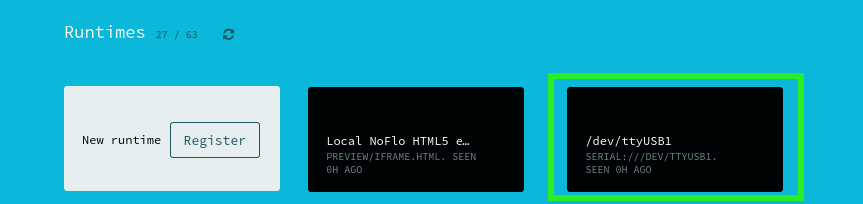
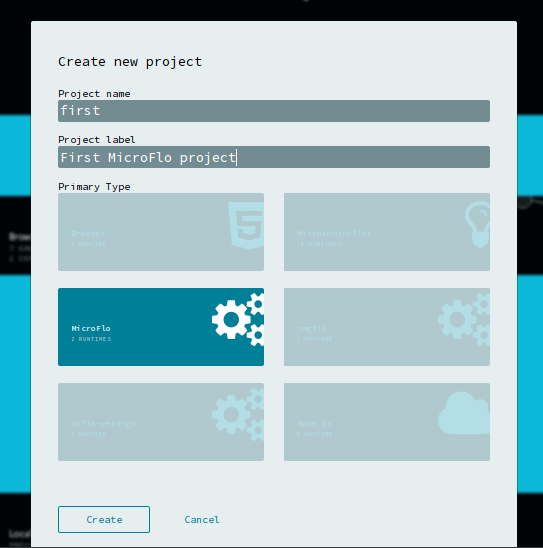
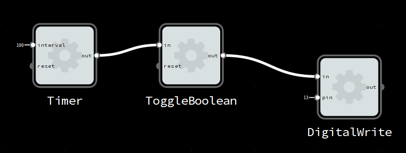

Getting started (MicroFlo)
Prepare your microcontroller for talking to Flowhub
To use Flowhub for programming your microcontroller, you need to flash your microcontroller with the MicroFlo runtime and run the MicroFlo Chrome app. These steps are documented here, and need to be completed before you continue.
Open Flowhub Chrome app
Make sure you have Flowhub v0.2.3 or later. Make sure your Arduino microcontroller is connected over USB.
- Download and run the Flowhub Chrome app
- Click “Login” and connect Flowhub with your TheGrid account
- Click the refresh button next to runtimes
The MicroFlo runtime should now show up in the list of runtimes.

Make a project
- Under “Projects” click “Create”
- Give your project a name and label
- Choose “MicroFlo” as the primary type 
- Tap “Create” and the UI should load, showing a blank canvas
- Tap “Select runtime” and chose the runtime for the serial port where your microcontroller is connected
Make your first graph
For general help on how to use the graph creation UI, see the Browser tutorial.
Try to make the following Hello World graph. hit the Play/Pause to upload it to your Arduino. Uploading will take ~1 second, and you will see the RX/TX LEDs on the board blink during this time, as well as upload output on the left side of the UI.

You should now see the LED of your Arduino blinking much faster, about 7 times a second. If so you have a working MicroFlo for Arduino setup, and can now try to build more complicated programs!